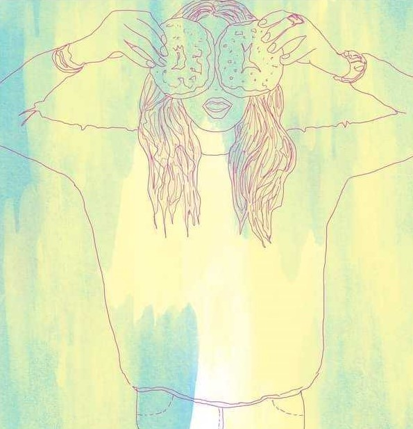
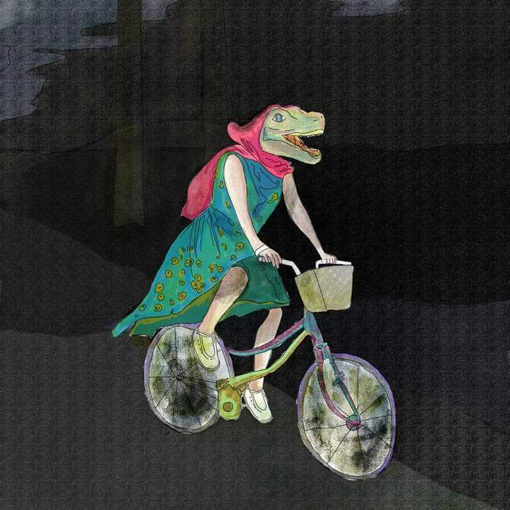
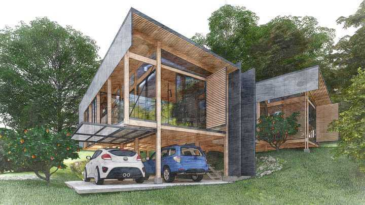
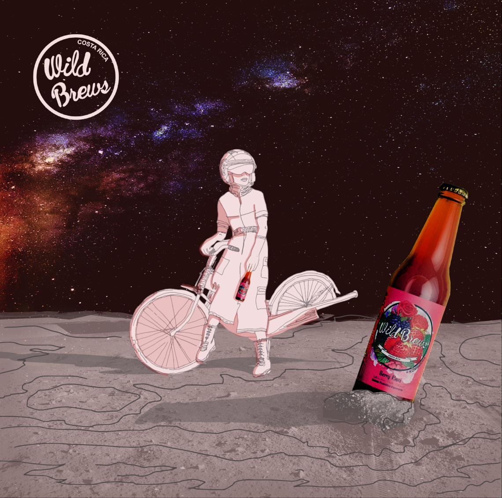

Marisol Azofeifa.
Me encanta construir productos
Actualmente trabajo como UI/UX designer, para distintos clientes.
Estudié Arquitectura como primer carrera y trabajé en diseño & logística por varios años. Hace unos años empecé a trabajar con productos digitales y he ido aprendió mucho. También me gusta dibujar, disfrutar de un buen café o comer algo dulce.




CV
Los últimos trabajos que he participado :)
2018-2020
Travel Retail Designer
Travel Retail Designer
- Diseñar y dirigir las diferentes etapas del diseño y construcción
- Gestión de proveedores
- Dirección de obra y logística de ingresos aeroportuarios
2014-Presente
Ilustradora
Wild Brews
- Propuesta de Branding
- Ilustraciones para redes sociales o uso varios
2020-Presente
UX/UI Designer
Totem
- Dirigir y diseñar distintos talleres según las necesidades del cliente
- Realizar pruebas de usabilidad en los productos.
- Generar wireframes y sistemas de diseño
- Trabajar en maquetas en figma para interacciones
- Colaborar con el equipo de desarrollo, negocio y diseño
- Mantener la documentación del Hand-off para distintos proyectos
- QA Revision con desarrollo para la implentación correcta del sistema de diseño
Contacto
marisolazofeifa@gmail.com